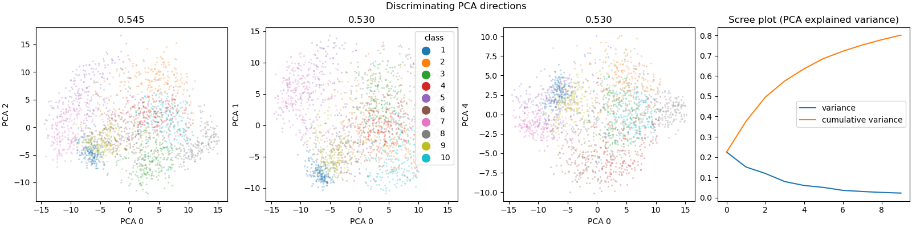

Note
Go to the end to download the full example code
mfeat-factors dataset visualization¶
A multiclass dataset with 10 classes. Linear discriminant analysis works surprisingly well!


- 

/home/circleci/project/~/miniconda/envs/testenv/lib/python3.11/site-packages/sklearn/datasets/_openml.py:322: UserWarning: Multiple active versions of the dataset matching the name mfeat-factors exist. Versions may be fundamentally different, returning version 1. Available versions:
- version 1, status: active
url: https://www.openml.org/search?type=data&id=12
- version 2, status: active
url: https://www.openml.org/search?type=data&id=978
warn(warning_msg)
Target looks like classification
/home/circleci/project/~/miniconda/envs/testenv/lib/python3.11/site-packages/seaborn/categorical.py:641: FutureWarning: The default of observed=False is deprecated and will be changed to True in a future version of pandas. Pass observed=False to retain current behavior or observed=True to adopt the future default and silence this warning.
grouped_vals = vals.groupby(grouper)
Showing only top 10 of 216 continuous features
/home/circleci/project/dabl/plot/utils.py:607: FutureWarning: The default of observed=False is deprecated and will be changed to True in a future version of pandas. Pass observed=False to retain current behavior or observed=True to adopt the future default and silence this warning.
for name, group in data.groupby(target)[column]:
Linear Discriminant Analysis training set score: 0.993
# sphinx_gallery_thumbnail_number = 5
import matplotlib.pyplot as plt
from sklearn.datasets import fetch_openml
from dabl import plot
X, y = fetch_openml('mfeat-factors', as_frame=True, return_X_y=True)
plot(X, y)
plt.show()
Total running time of the script: (0 minutes 10.056 seconds)